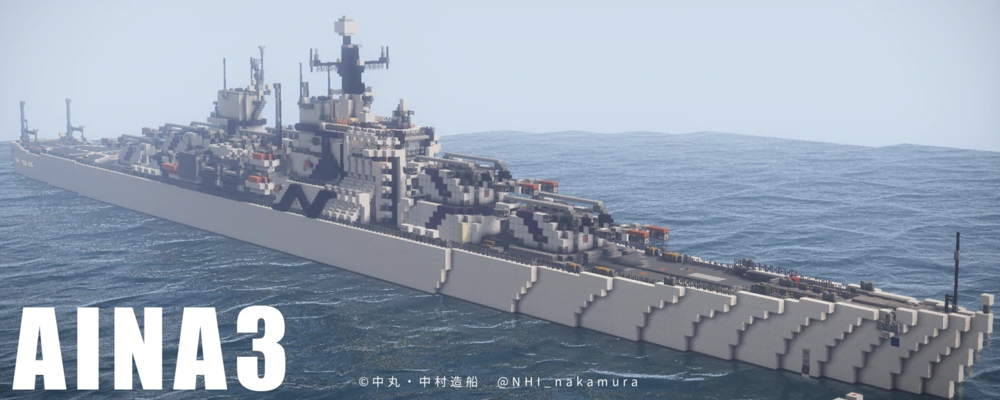

AINA級巡洋艦
新技術をテストするための試験的艦
戦艦に次ぐ攻撃および防御性能を持つ。基本制御装置として第一世代四天王プラットフォームを搭載。
仕様
大きさ
| 全長 | 255m |
| 全幅 | 23m |
| 吃水 | 8m |
| 総ブロック数 |
装置
| 主制御装置 | CSJ11 |
| 砲塔制御装置 | Z4 |
兵装
| 種別 | 型式x搭載数 | 弾頭数 |
|---|---|---|
| 主砲 | Mk.J1 x 4 | 280 x 2 |
| 拡散砲 | Type OG x 4 | 416 |
| 対空砲 | Type F（旧式装薬版） x 2 | |
| 対空砲 | Type F（カート版） |
解説
開発経緯
本艦は、戦艦や駆逐艦よりも1世代前のアーキテクチャを採用した古い船です。後の第二世代四天王プラットフォームとなる次世代技術の有効性を検証するため、いくつかの新機軸を採用して建造されました。
搭載した新機軸は、砂専用砲（耐水弾攻撃能力）、耐水弾防御構造、トロッコ式ダメージセンサーです。
外観
新しいデザインコンセプト、「骨格」に基づき大幅に変更されました。艦橋に水流装甲を搭載し、水流装甲層が一部外部に露出する部分がチャームポイントです。
兵装
主砲は前作と同じものが搭載されています。拡散砲のうち1つは砂専用砲に換装されています。
装置
第一世代四天王プラットフォームが搭載されています。本装置は旧型ダメージセンサーのみに対応していますが、本艦では新型のトロッコ式に対応するために特別な改造が行われました。
内装
居住区の一部は工事中のまま放置されています。
評価
トロッコ式ダメージセンサーはその有効性が確認できたため、第二世代四天王プラットフォームにビルトインされました。
砂専用砲は有効性を確認できず、この後には採用されませんでした。
配布フォーム
1. 下のリンクをクリック
2. google form でアンケートに答える
3. dropboxでデータを受け取る
※PC版マインクラフト用のデータです。形式は.schematicで、これを扱うにはMCEditが必要です。
出演動画

閉じる